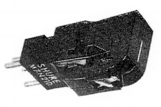

M7/21D

■価格 8,200円■発電方式 MM型■出力電圧 3.5mV■針圧 2.5g以下■再生周波数帯域 20-20,000Hz■チャンネルセパレーション 20dB(1kHz)■チャンネルバランス ■コンプライアンス ■負荷抵抗 47kΩ■負荷容量 ■インピーダンス ■針先 0.7mil■自重 7.9g■交換針 N21D(5,600円)■発売 〜1967年■販売終了 1968〜69年頃■備考 価格は1967年頃のもの
SHUREのインデックスへ